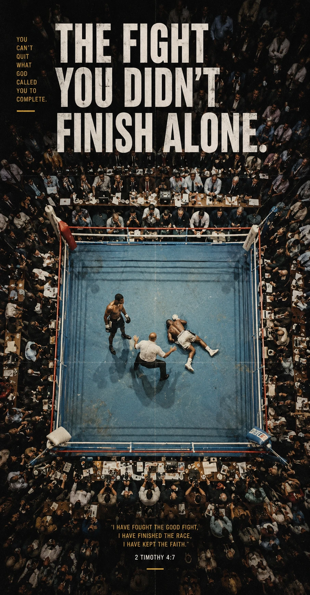

Sports / Page 19
Away team notes
2 Timothy 4:7
The fight you didn't finish alone.
You can be tired and still be in the story.
The Corner
Every athlete knows the voice outside the ring matters when the round gets long.
The Text
"I have fought the good fight, I have finished the race, I have kept the faith."
The Question
Who helps you remember what you are still called to complete?